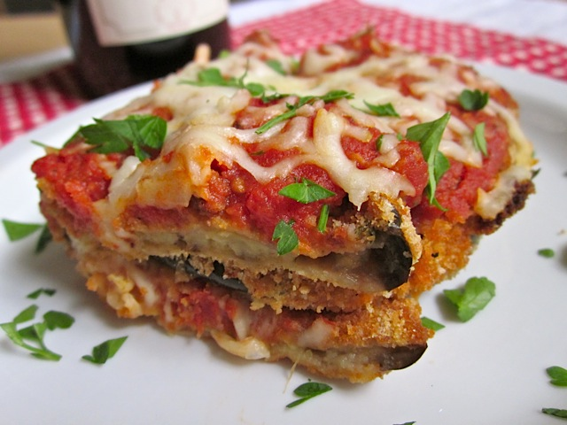

Step 6: Bake in a slow oven for about an hour, turning the heat up in the last few minutes to lightly brown the top. The dish should not be eaten hot – let it cool some, or better yet, entirely. It will be better the next day or even the day after that.
